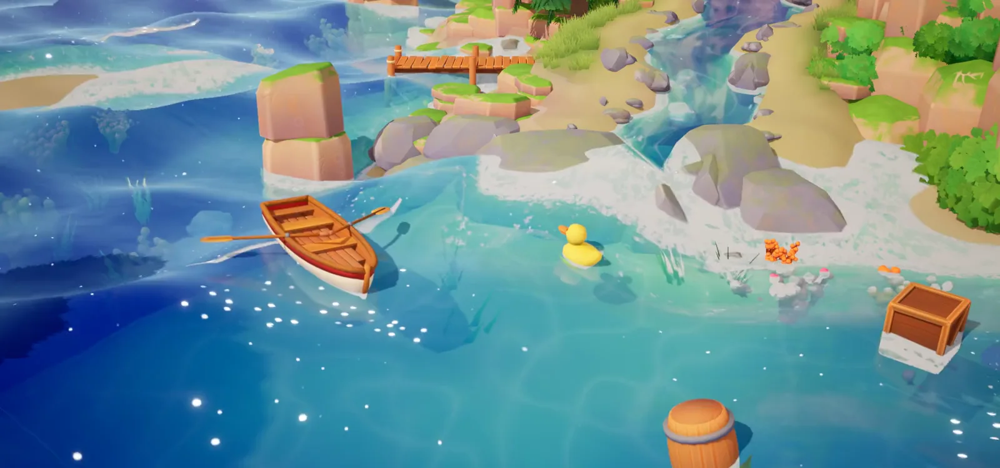
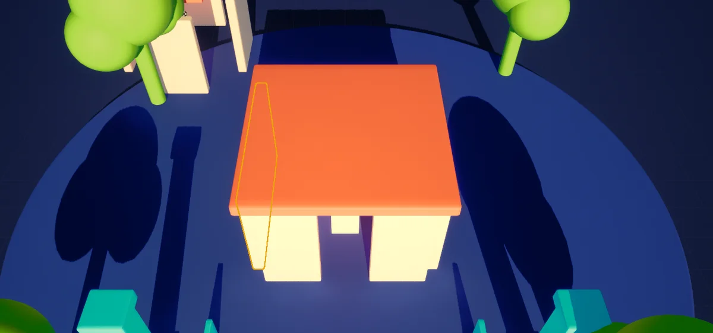
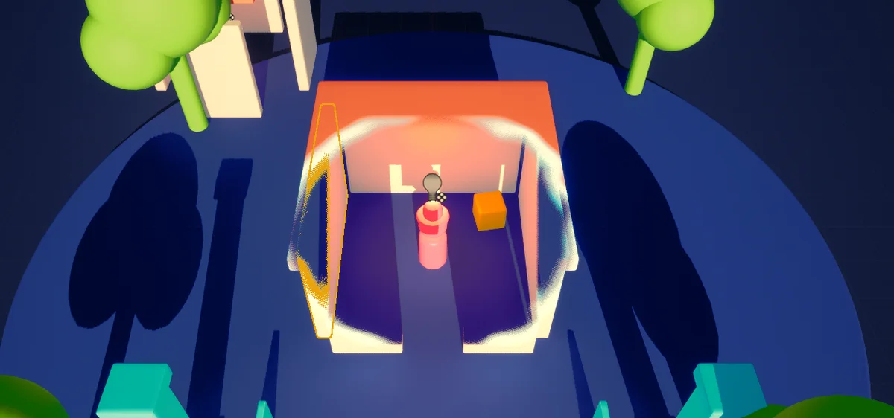
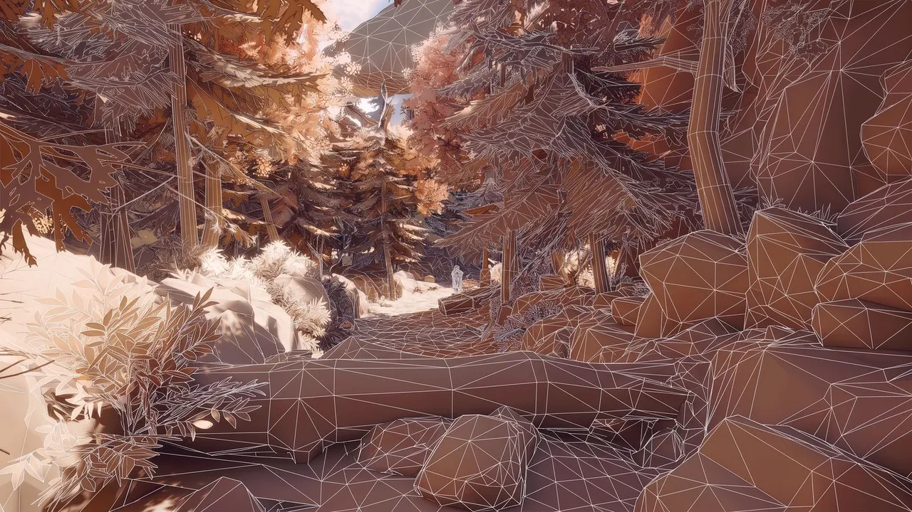
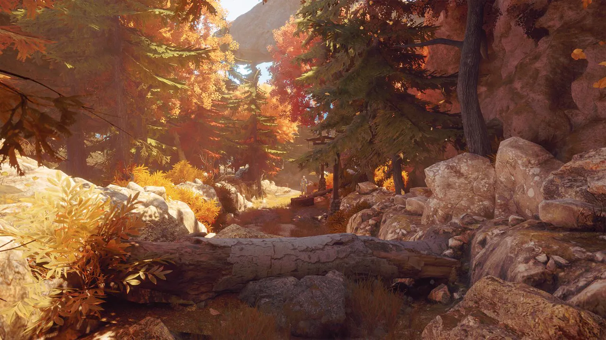

Stylized Water
Stylized water shader for UE 5.8. Drop a plane, pick a preset, done.
- No textures
- 6 presets
- Spline river
- Waterfall
- Floating objects

Stylized Water
No textures, 6 presets, spline river, waterfall and floating objects. Drop a plane, pick a preset, done.
Drop them onto your meshes in Unreal Engine 5. Two are free, so you can try my work before you pay.
Stylized water shader for UE 5.8. Drop a plane, pick a preset, done.


WithoutWith See-ThroughSee your character through walls, roofs and trees. Drag the handle to compare.

Toon, anime, comic and painterly post process styles. Mix any effect and save your own preset.

Painted snow, moss, autumn leaves, sand and frost on top of any material.

Hand-painted edges on any mesh, as a drop-in Material Function.
Four years making game art, most of it for Crimson Tale. Click any piece to see it big. I can build yours too.
Hire me on Fiverr Props from $20 · environments from $150 · 5.0 ★ on Fiverr

WireframeFinalThe forest and its topology. Same camera, same meshes: the wireframe under the final colors.
Get a world like thisFive reviews, five stars each. These are the clients’ own words, exactly as they wrote them.
Read them on Fiverr“He is very polite understanding and goes above and beyond to meet the client’s expectations”
“Me gusto mucho que supo intrepetar la idea. Al darle un consepto lo intrepreto muy bien hasta superando mis propias espectativas, 10/10”
Translation: I really liked that he knew how to interpret the idea. Given a concept, he interpreted it very well, even beyond my own expectations, 10/10.
“We worked together for the model of a small tropical island. Rafael is very professional and made sure to meet my requirements.”
“amazing work!!”
“Very skilled and receptive to feedback.”
I model, paint and render stylized 3D for games. Pick a gig and tell me your idea.
A 3D artist with four years in the video game industry, focused on environment art.
I work across the full workflow: modeling, texturing, rigging and rendering. Most of that craft went into Crimson Tale, the game we make at Thruster Games, the studio I co-founded in Barcelona. Today I also build stylized materials for Unreal Engine 5 and sell them on Fab.